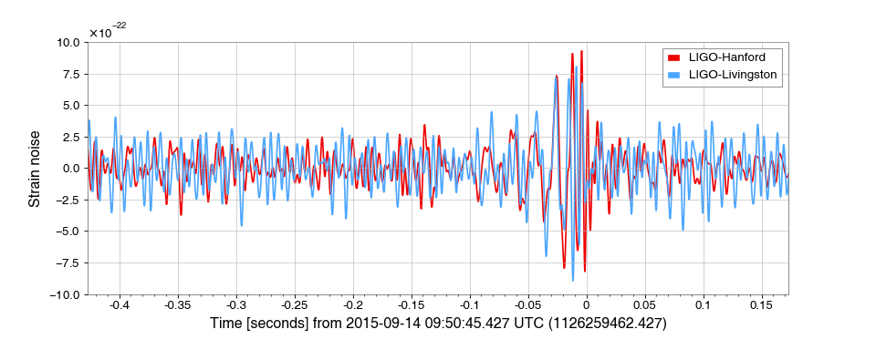
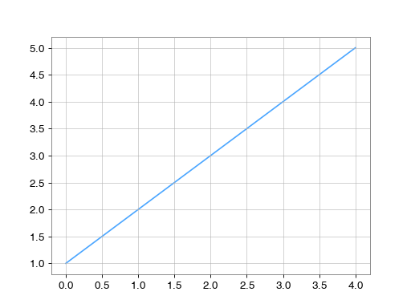

The Gravitational-Wave Observatory colour scheme¶
In order to simplify visual identification of a specific gravitational-wave observatory (GWO) on a figure where many of them are plotted (e.g. amplitude spectral densities, or filtered strain time-series), the GWO standard colour scheme should be used:
(png)
{kind=link}

For example:
from gwpy.timeseries import TimeSeries
from gwpy.plot import Plot
h1 = TimeSeries.fetch_open_data('H1', 1126259457, 1126259467)
h1b = h1.bandpass(50, 250).notch(60).notch(120)
l1 = TimeSeries.fetch_open_data('L1', 1126259457, 1126259467)
l1b = l1.bandpass(50, 250).notch(60).notch(120)
plot = Plot(figsize=(12, 4.8))
ax = plot.gca(xscale='auto-gps')
ax.plot(h1b, color='gwpy:ligo-hanford', label='LIGO-Hanford')
ax.plot(l1b, color='gwpy:ligo-livingston', label='LIGO-Livingston')
ax.set_epoch(1126259462.427)
ax.set_xlim(1126259462, 1126259462.6)
ax.set_ylim(-1e-21, 1e-21)
ax.set_ylabel('Strain noise')
ax.legend()
plot.show()
(png)
{kind=link}

The above code was adapted from the example Filtering a TimeSeries to detect gravitational waves.
The colours can also be specified using the interferometer prefix (e.g. 'H1') via the gwpy.plot.colors.GW_OBSERVATORY_COLORS object:
from matplotlib import pyplot
from gwpy.plot.colors import GW_OBSERVATORY_COLORS
fig = pyplot.figure()
ax = fig.gca()
ax.plot([1, 2, 3, 4, 5], color=GW_OBSERVATORY_COLORS['L1'])
fig.show()
(png)
{kind=link}

Note
The 'gwpy:<>' colours will not be available until gwpy
has been imported.